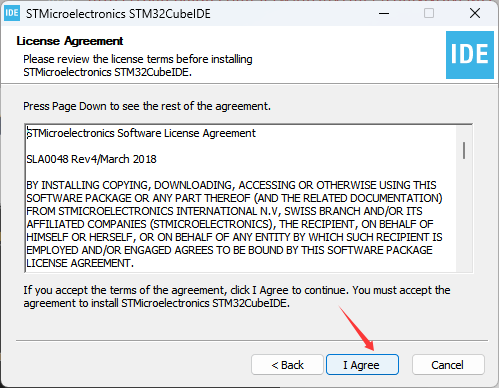
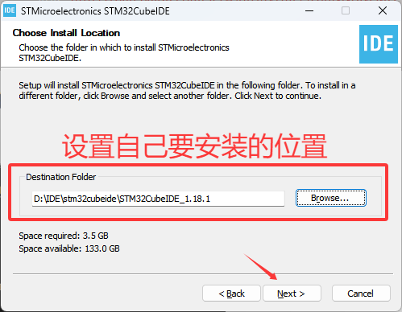
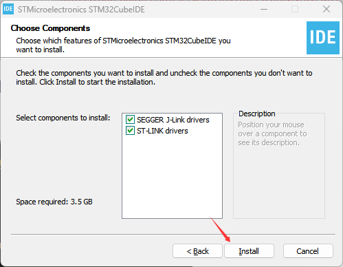
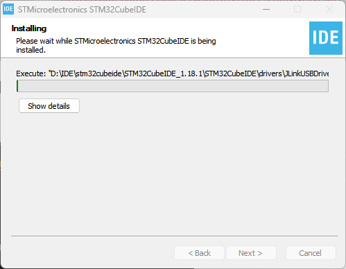
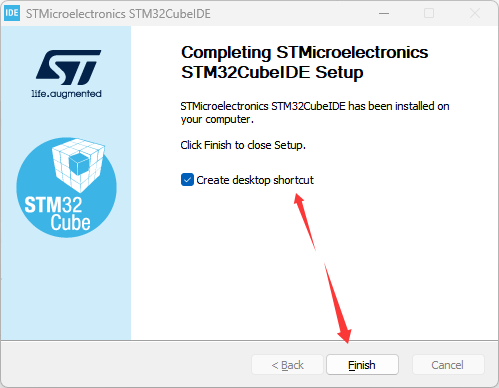

环境搭建
开发环境
目前比较常用的STM32开发环境有以下几种：
标准，经典。除了 STM32 外还支持很多其他厂家的芯片。对于调试来说，也支持非常多的调试工具，并且支持单步调试查看数据变量等。
STM32CubeMX 是 ST 开发的一种图形化代码生成工具。以前单独使用 MDK5 时，基本所以代码都要手撸，很浪费时间。而自从有了 STM32CubeMX 后，开发 STM32，对片上资源的初始化更加快速便捷，只要点点点，就可以生成初始化代码，并且生成一个开发工程，让用户可以对项目的硬件资源软件配置不用过于关心，可以画更多的时间去处理考虑项目产品的应用层该如何实现。
以前 ST 是没有自己的代码编辑与编译器的，现在 ST 出了自家的代码生成工具（STM32CubeMX） + 编译器（STM32CubeIDE），是免费的，终于可以让用户摆脱 MDK5 的收费版权了。但是遗憾的是只能用于STM32的开发，不支持其他芯片。
当然还有一些创客们比较喜欢的EIDE、Clion、PIO、arduino等等。遗憾的是，它们虽然好看，但是用在产品开发上基本很少，还是有不少缺陷的。
那么综上所述。我们这 STM32F4 整个入门手册，将以 STM32CubeIDE 进行编写和案例开发。
IDE 安装
IDE软件获取
官网下载地址：STM32CubeIDE STM32的集成开发环境
在官网下载是需要登录并验证的，如果嫌弃麻烦也可以用我目前使用的版本 V1.18.1 ：
链接: https://pan.baidu.com/s/1wJ8tH6VHm99zbnNNAjvcMQ
提取码: LGGY
后面的内容都是基本该版本编写的，如果后面 IDE 有更新导致入门手册和IDE不一样，恕不另外说明。
IDE环境依赖
安装 STM32CubeIDE 是需要 JAVA 环境启动的，因此我们还需要下载安装JAVA环境包。
官网下载地址：www.java.com
在官网下载卡，如果嫌弃麻烦也可以用我目前使用的版本 Version 8 Update 451 ：
链接: https://pan.baidu.com/s/1wJ8tH6VHm99zbnNNAjvcMQ
提取码: LGGY
离线芯片包下载
在我们使用 CubeIDE 开发指定芯片时，为了让它能够快速加载对应的芯片资源，需要我们提供芯片 MCU 包。
这里我们下载的是 STM32CubeF4 MCU 包。
官网下载地址：https://www.st.com.cn/zh/embedded-software/stm32cubef4.html
该包由 STM32Cube 硬件抽象层（HAL）和底层（LL）API 组成，还包括一套一致的中间件组件（实时操作系统、USB、FAT 文件系统、图形和 TCP/IP）。另外 TouchGFX 图形软件栈也包含在 STM32CubeF4 MCU包中，作为 STM32Cube 生态系统的组成部分。它在 STM32 微控制器上供生产及分发使用时是免费提供的。
所有的嵌入式软件工具包都附带了一套完整的在 STMicroelectronics 板上运行的示例程序。如果我们要不会的地方，可以打开官网的例程参考对比。
不想在官网找？如果嫌弃麻烦也可以用我目前使用的版本 stm32cubef4-v1-28-0 ：
链接: https://pan.baidu.com/s/1wJ8tH6VHm99zbnNNAjvcMQ
提取码: LGGY
IDE的安装
将下载下来的 STM32CubeIDE 文件解压，然后双击运行 .exe 文件进行安装。以下是安装步骤：



安装的路径请务必不要有中文！


期间弹出的 安装驱动确认框 需要手动点击确认。


JAVA环境安装